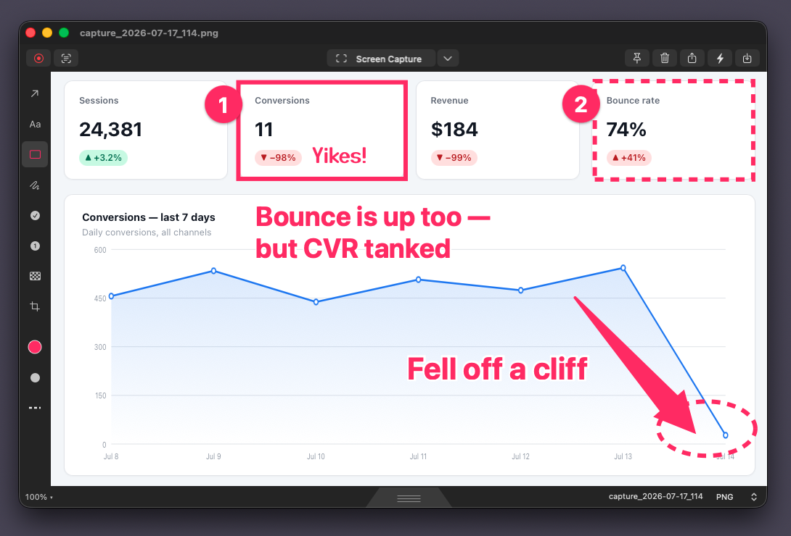

コーディングエージェントと使う
エージェントの下書きを、あなたが仕上げる
Claude Code・Cursor・Codex などのコーディングエージェントが画面を撮り、矢印と一言の下書きを作って FletchShot で開きます。あなたは位置と文言を直して ⌘↩ を押すだけ。仕上がった画像がエージェントに戻り、README や PR、不具合報告に載るところまで進みます。
繋ぐのは無料の MCP サーバー fletchshot-mcp です。FletchShot 側の設定はありません。
macOS 14以降 ・ ダウンロード無料、14日間試してから¥1,500の買い切り ・ MCP サーバーは無料。エージェント連携のための追加料金はありません。
何が起きるか
1エージェントが撮って、下書きを作る
「この画面のここに矢印と一言を入れて」と頼むか、エージェントの提案を承認します。どのウィンドウを撮るか、矢印をどこに向けるか、何と書くかは、エージェントが決めます。
2あなたが直して、⌘↩
下書きのノートが開きます。矢印も文字もモザイクも、普段どおり掴んで動かせます。直し終えたら「返す」（⌘↩）。ノートは閉じます。
3エージェントが受け取って、先へ進める
焼き込み済みの画像がエージェントに渡ります。そのまま README に貼る、PR に添える、issue に付ける——続きはエージェントの仕事です。

なぜ FletchShot を挟むのか
注釈を付けて返す MCP サーバーは、ほかにもあります。多くは注釈を画素に焼いた画像を返します。それで当たっていれば何の問題もありません。惜しいときに困ります——矢印の先が数十ピクセルずれて対象の文字を隠している、文字が本文の行に重なっている。画素に焼かれていれば、人には直せません。言い直してもう一度描かせるか、諦めるかの二択になります。
FletchShot は下書きを掴める注釈として開きます。ずれた矢印は、つまんで引っ張れば済みます。文言は打ち直せます。隠したいところには自分でモザイクを足せます。「直す」ほうが「言い直す」より速い場面は、思ったより多くあります。
| 画素に焼いて返す | FletchShot で開く | |
|---|---|---|
| 矢印が少しずれていたとき | 頼み直す | つまんで動かす |
| 文言を変えたいとき | 頼み直す | 打ち直す |
| 写ってはいけないものがあったとき | 撮り直す | その場でモザイクを足す |
| 画像がエージェントに渡るとき | 撮った時点 | あなたが「返す」を押した時点 |
撮って見せるだけなら、これは要りません
エージェントに画面を見せたいだけなら、macOS に入っている screencapture で足ります。-l でウィンドウ単体、-R で範囲を撮れます。FletchShot を挟む意味があるのは、その画像が人に向かうとき——README の読み手、PR のレビュアー、サポートの返信を読む相手がいるときです。
画像がエージェントに渡るのは「返す」のときだけ
FletchShot は通信しません。エージェントに画像が渡るのは、下書きのノートで「返す」（⌘↩）を押したときだけです。
- コピー（⌘C）・保存・ドラッグ・共有・「ショートカットで渡す」では渡りません。人が何かを渡す操作を、エージェントへの同意として読み替えません。
- 返すのはモザイクを焼き込んだ仕上がりの画像だけです。注釈前の原本は返しません。
- 「返す」ボタンはエージェントの下書きから開いたノートにだけ出ます。⌥⌘4 で撮ったいつものノートは、何も変わりません。
- MCP サーバー
fletchshot-mcpは stdio だけで、ネットワークを使いません。画面を見張ることも、FletchShot の書類を自分で読むこともしません。
渡したあとにその画像をどう扱うかは、あなたのエージェントの設定によります。エージェントが自分の AI サービスへ画像を送るなら、そこへは届きます。だから返す前に見るのが、この作りの眼目です。
導入
FletchShot（Mac App Store 版）を入れたら、エージェントに MCP サーバーを登録します。
claude mcp add fletchshot -- npx -y fletchshot-mcp
Cursor・Codex CLI の書き方、必要な許可（画面収録）、使い方の詳細はヘルプにあります。
要るもの
- macOS 14 以降 と FletchShot（Mac App Store 版）
- Node.js 18 以降（
npxで MCP サーバーを動かすため） - エージェントを動かしているターミナル・エディタの画面収録の許可（システム設定 › プライバシーとセキュリティ › 画面収録）。ウィンドウ単体の撮影には Xcode Command Line Tools も使います
値段
MCP サーバーは無料です。FletchShot はダウンロード無料で 14 日間すべて試せて、続けるなら ¥1,500 の買い切り（Full Unlock）。この買い切りにエージェント連携も含まれます。サブスクリプションも、別売りのアドオンもありません。
Mac App Store から入れられます。アカウント登録なし、サブスクなし、アプリは外部と通信しません。
やらないこと
この道は「エージェントの下書きを人が仕上げて返す」入口に限ってあります。次のことはしません。意図して載せていません。
- 人の操作なしに画像を受け取る経路——自動の返却、完成の自動通知、コピーや保存の流用。
- エージェントに画面を操作させる機能——画面の監視、UI の操作、結果を見て下書きを直す自動の繰り返し。
- FletchShot 側の設定項目。この機能のための設定画面は作っていません。導入の作法はエージェント側の都合で変わるので、ヘルプだけを直せばよいようにしてあります。